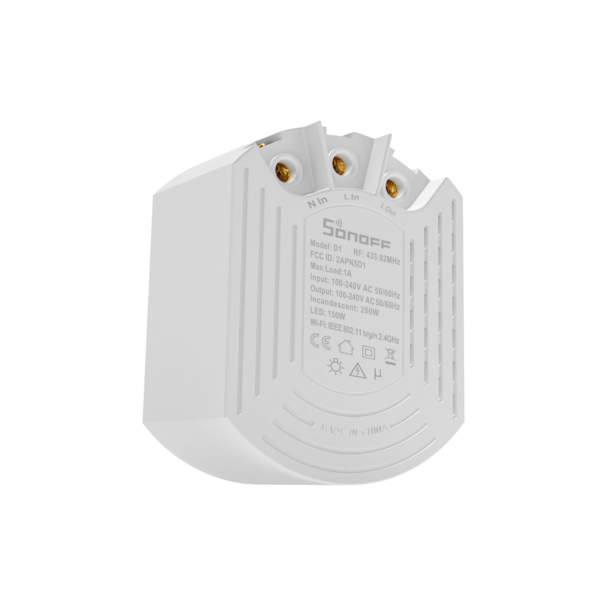
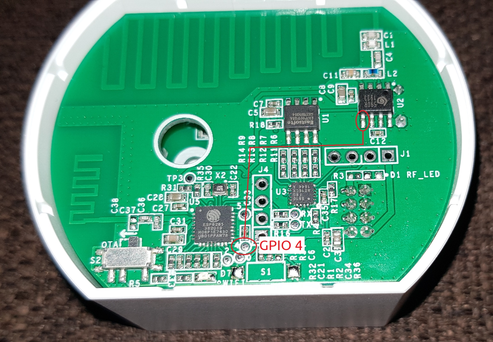
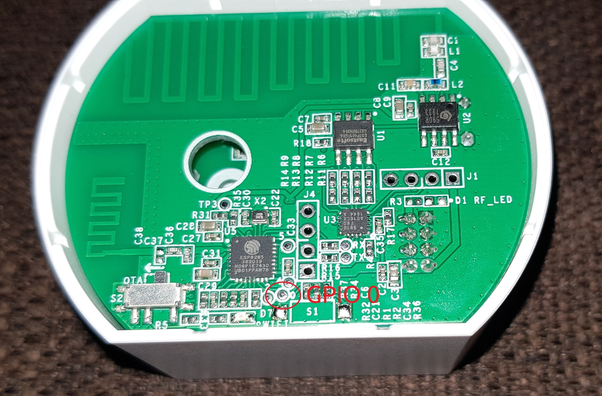
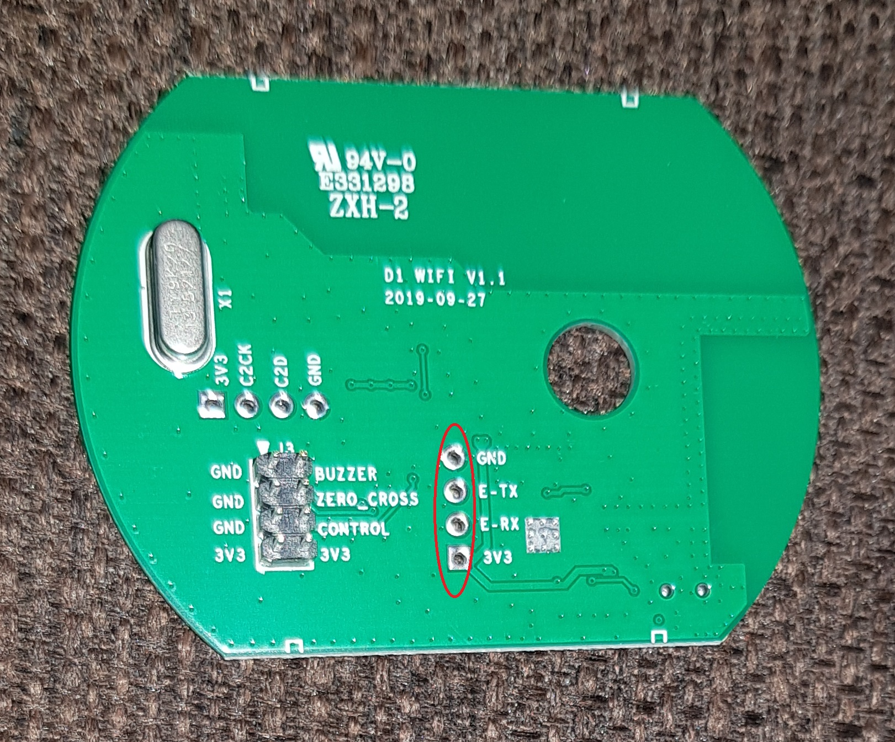

|
|
Jeff Rescignano@JeffResc
|
All code for this project is available on my GitHub at JeffResc/Sonoff-D1-Dimmer. Please be sure to use code from there to ensure you are using the most recent code as I may forget to update the code listed below in this article.

The Sonoff D1 Dimmer, released in November 2019, is one of the newest additions to Sonoff's lineup of ESP8266-based smart home products. This smart dimmer switch is capable of remotely controlling the light brightness and on/off state over a Wi-Fi connection or the onboard 433MHz remote receiver for Sonoff's RM433 that optionally comes with the device. You can view more information about this product on its product page or its FCC ID page.
To get started, you must have ESPHome installed and running and create a new device in the ESPHome interface. Although this is a fairly straight-forward process, it is outside the scope of this guide, but the ESPHome website has a great guide on how to get started via Home Assistant or the command line.
For this integration, we will be utilizing a custom light component in ESPHome. Just create a new device as you normally would basing it off of the d1_dimmer_no_rf.yaml code found below. This code works great if all you want to do is have control of the dimmer and you don't use the RF remote. If you'd like to do more than just control the dimmer (i.e. use the RF remote), you can find all the available subprojects on GitHub at JeffResc/Sonoff-D1-Dimmer. In addition to that file, you will also need to include d1_dimmer_no_rf.h, which contains the C++ code for the custom light component.
d1_dimmer_no_rf.yaml
# Set variables such as the device's name and friendly name
# The devicename is used internally which the friendly name is shown in the user interface
substitutions:
devicename: d1_dimmer
friendly_name: Dimmer
esphome:
name: $devicename
platform: ESP8266
board: esp01_1m
# Include our custom code
includes:
- d1_dimmer_no_rf.h
# TODO: Set these as your own Wi-Fi credentials
wifi:
ssid: Jeff
password: !secret wifi_password
fast_connect: true
ap:
ssid: ESP-${devicename}
password: !secret fallback_password
captive_portal:
# TODO: Set these as your own web server credentials
web_server:
port: 80
auth:
username: !secret web_username
password: !secret web_password
# Make sure to disable serial logging as it will interfere with our serial connection
logger:
baud_rate: 0
# TODO: Set your own API credentials
api:
password: !secret api_password
# TODO: Set your own OTA credentials
ota:
password: !secret ota_password
safe_mode: True
# Uses the onboard LED as status indicator
status_led:
pin:
number: GPIO13
inverted: True
# Report basic device information like it's Wi-Fi signal strength and uptime
sensor:
- platform: wifi_signal
name: ${friendly_name} WiFi Signal
update_interval: 60s
- platform: uptime
name: ${friendly_name} Uptime
filters:
- lambda: return x / 60.0;
unit_of_measurement: minutes
# Basic switch to allow you to restart the device remotely
switch:
- platform: restart
name: ${friendly_name} Restart
binary_sensor:
- platform: status
name: "Sonoff D1 Status"
# Define our custom light component
light:
- platform: custom
lambda: |-
auto dimmer_light = new Sonoff_D1_Dimmer();
App.register_component(dimmer_light);
return {dimmer_light};
lights:
- name: $friendly_name
id: main
restore_mode: RESTORE_DEFAULT_OFF
gamma_correct: 0
d1_dimmer_no_rf.h
/*
d1_dimmer_no_rf.h - Sonoff D1 Dimmer support for ESPHome
Copyright © 2020 Jeff Rescignano
Permission is hereby granted, free of charge, to any person obtaining a copy of this software
and associated documentation files (the “Software”), to deal in the Software without
restriction, including without limitation the rights to use, copy, modify, merge, publish,
distribute, sublicense, and/or sell copies of the Software, and to permit persons to whom
the Software is furnished to do so, subject to the following conditions:
The above copyright notice and this permission notice shall be included in all copies or
substantial portions of the Software.
THE SOFTWARE IS PROVIDED “AS IS”, WITHOUT WARRANTY OF ANY KIND, EXPRESS OR IMPLIED, INCLUDING
BUT NOT LIMITED TO THE WARRANTIES OF MERCHANTABILITY, FITNESS FOR A PARTICULAR PURPOSE AND
NONINFRINGEMENT. IN NO EVENT SHALL THE AUTHORS OR COPYRIGHT HOLDERS BE LIABLE FOR ANY CLAIM,
DAMAGES OR OTHER LIABILITY, WHETHER IN AN ACTION OF CONTRACT, TORT OR OTHERWISE, ARISING
FROM, OUT OF OR IN CONNECTION WITH THE SOFTWARE OR THE USE OR OTHER DEALINGS IN THE SOFTWARE.
-----
If modifying this file, in addition to the license above, please ensure to include links back to the original code:
https://jeffresc.dev/blog/2020-10-10
https://github.com/JeffResc/Sonoff-D1-Dimmer
https://github.com/arendst/Tasmota/blob/2d4a6a29ebc7153dbe2717e3615574ac1c84ba1d/tasmota/xdrv_37_sonoff_d1.ino#L119-L131
-----
THANK YOU!
Thanks to the team over at Tasmota for providing the serial codes to control the dimmer!
View the source: https://github.com/arendst/Tasmota/blob/2d4a6a29ebc7153dbe2717e3615574ac1c84ba1d/tasmota/xdrv_37_sonoff_d1.ino#L119-L131
*/
#include "esphome.h"
class Sonoff_D1_Dimmer : public Component, public LightOutput
{
private:
bool lastBinary;
int lastBrightness;
public:
void setup() override
{
// Start a serial connection when the script is setup
Serial.begin(9600);
}
// Set the device's traits
LightTraits get_traits() override
{
auto traits = LightTraits();
traits.set_supports_brightness(true);
traits.set_supports_rgb(false);
traits.set_supports_rgb_white_value(false);
traits.set_supports_color_temperature(false);
return traits;
}
void control_dimmer(const bool & binary, const int & brightness) {
if (binary != lastBinary || brightness != lastBrightness)
{
// Include our basic code from the Tasmota project, thank you again!
// 0 1 2 3 4 5 6 7 8 9 10 11 12 13 14 15 16
uint8_t buffer[17] = {0xAA, 0x55, 0x01, 0x04, 0x00, 0x0A, 0x00, 0x00, 0xFF, 0xFF, 0xFF, 0xFF, 0xFF, 0xFF, 0xFF, 0xFF, 0x00};
buffer[6] = binary;
buffer[7] = brightness;
for (uint32_t i = 0; i < sizeof(buffer); i++)
{
if ((i > 1) && (i < sizeof(buffer) - 1))
{
buffer[16] += buffer[i];
}
Serial.write(buffer[i]);
}
}
}
void write_state(LightState *state) override
{
bool binary;
float brightness;
// Fill our variables with the device's current state
state->current_values_as_binary(&binary);
state->current_values_as_brightness(&brightness);
// Convert ESPHome's brightness (0-1) to the device's internal brightness (0-64)
const int calculatedBrightness = round(brightness * 64);
ESP_LOGD("custom", "Interpreting brightness %f as %d", brightness, calculatedBrightness);
control_dimmer(binary, calculatedBrightness);
}
};
Out of the box, the Sonoff D1 Dimmer's RF features are controlled by another chip found on the board, the Synoxo 590R ASK, but GitHub user, @craigueh, found that "the delay going through the other chip unbearable", so it is a better approach to directly solder the RF receiver directly to the ESP8266 and have all control take place there. All credit for this method goes to @craigueh, as they were the one to post the steps on GitHub.
To do this, you must solder the top right corner pin on the 590R RF chip to solder pad 4 on the ESP8285.
Then, be sure to use d1_dimmer_rf_soldered.yaml and d1_dimmer_rf_soldered.h from JeffResc/Sonoff-D1-Dimmer/d1_dimmer_rf_soldered on GitHub.
If you would like to use RF, but are not interested in soldering, you can try d1_dimmer_rf.yaml and d1_dimmer_rf.h from JeffResc/Sonoff-D1-Dimmer/d1_dimmer_rf on GitHub.
To flash the ESP8285 found onboard, first compile the binary in the ESPHome UI. If you are unsure how to compile the binary, you can find instructions on the ESPHome website.
Then connect your flashing tool such as this FTDI USB to Serial Device on Amazon or even another ESP8266 as described in this tutorial. Ensure that your 3V3 pin is only connected to a 3V3 source. Using another voltage such as 5V could damage your device.
I found this device very easy to flash after figuring out the correct pin locations on the board. I've marked the correct locations on the board to flash the ESP8285, which include access to the 3V3, GND, TX, RX, and GPIO0 pins. To help with the flash, I found it handy to use short break-away male header pins to line-up the cables with the corresponding holes on the board.
First, connect GPIO0 on the board to GND. You want to ensure this is grounded before powering the device as this will boot the onboard ESP8285 in flashing mode. Then, either connect your wires directly to the board by soldering, holding them in place, or using the header pin trick as descibed above in order to connect your flashing device to GND, TX, RX, and 3V3 as marked below. GitHub user, @cpankonien, provides a great resource on how to do this. You should then be able to flash the device using a tool such as ESPHome Flasher or esptool.py.

Image of GPIO 0. Photo courtesy of klotzma.

Image of GND, TX, TX and 3V3. Photo courtesy of klotzma.